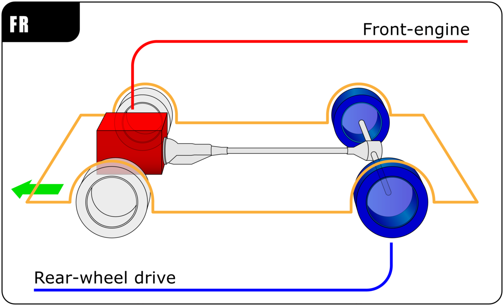
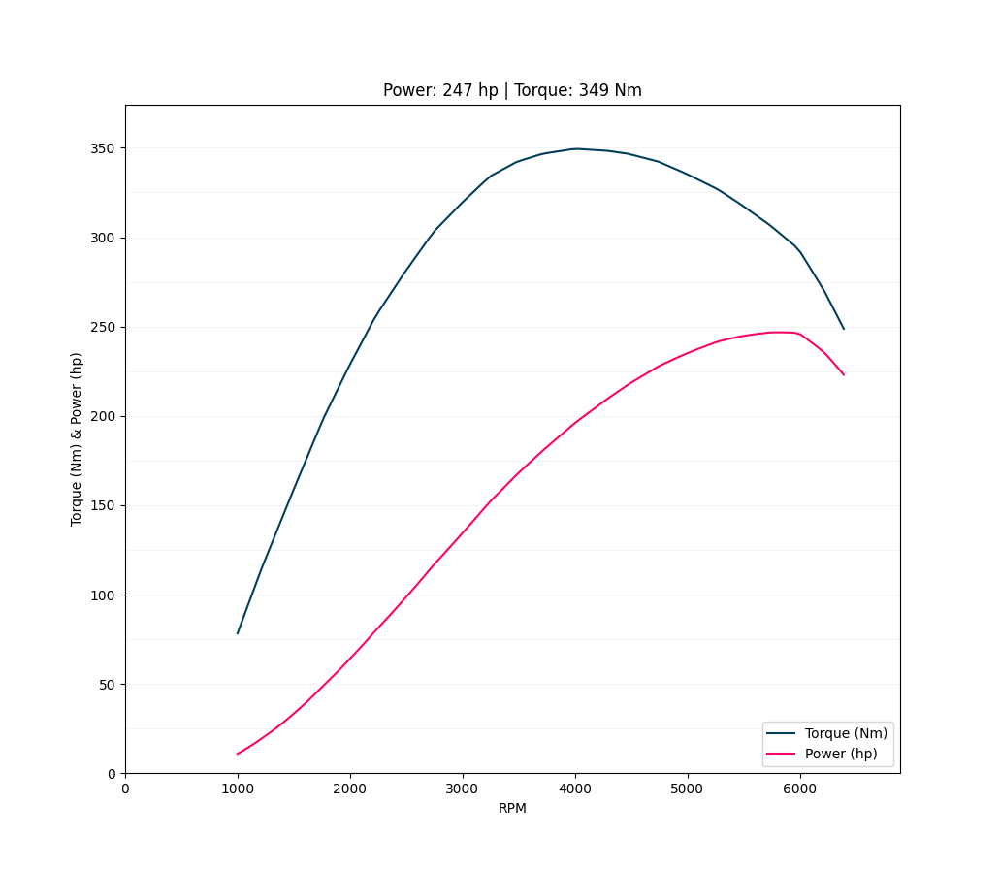
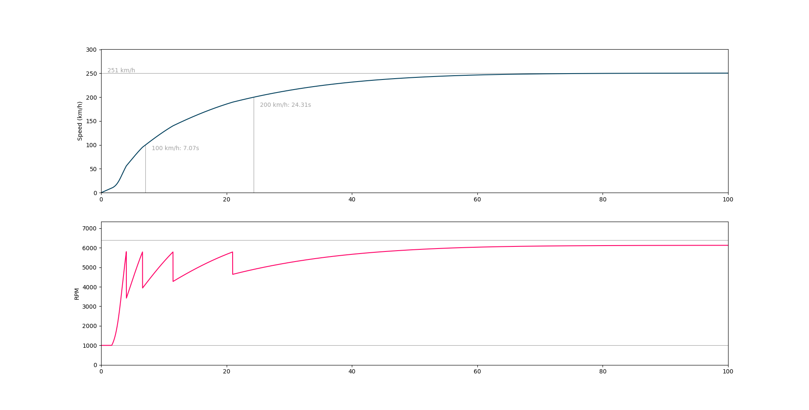

Setting up a mathematical model of a car and simulating it.
July 28, 2022
Being passionate about both cars and programming, I wanted to find an online resource that would put equations on such beautiful machines. Sadly, it seems that it is a lot rarer than I thought. That is why I decided to make my own using Python.
In the following article we will set up a fairly simple model of a car, and apply it to one of my favourite vehicle: the 1989 Porsche 944 Turbo. But before that, I would like to credit
this article on x-engineer.org that was very useful for this project.
Understanding the physics behind the movement of a car
The transmission layout
To drive the car forward, the power of the engine needs to be transferred from the pistons to the wheels. Here we will be considering an FR car (Front engine, Rear wheel drive), as this drawing shows:

First there is the engine, which creates power and transfers it to the torque converter (on manual transmissions this is actually the clutch). It is connected to the gearbox, then to the driveshaft that travels all the way to the back, then to the differential (which contains a spider gear that will be important later). Finally, the power is delivered to the wheels and the car can move. Sadly, the transmission system is not perfect, and energy is lost along the way.
The car movement
As the car drives on the road, 4 main forces are applied:
The main one is the traction force, that pulls the vehicle forward. It depends on the power of the engine, and the gears in the transmission. Gravity will keep the car against the road, but can also pull or push it, whether it is going up or downhill.
The 2 last ones are resistant forces: drag is the result of the body passing through the air molecules, and rolling resistance is caused by the friction of the tires against the road.
Writing the movement equations
The traction force
The traction force is actually the force applied at the end of the wheel, as a result of its torque. They are linked by \(T_w = F_t \times r_w\), with \(T_w\) the torque and \(r_w\) the radius of the wheel. The torque applied to the wheel can be deducted from the one produced by engine, considering that it travels through a series of gears (the gearbox and the differential), and accounting for the energy lost: \( T_w = T_e \times i \times i_0 \times \eta\), with \(T_e\) the torque output of the engine at the crankshaft, \(i\) the gear ratio of the gear currently engaged, \(i_0\) the final drive (on the differential), and \(\eta\) the transmission efficiency. Finally, we have:
\[F_t = \frac{T_e \cdot i \cdot i_0 \cdot \eta}{r_w}\]
\[F_t \text{ Traction force, }N\]
\[T_e \text{ Engine torque, }Nm\]
\[i \text{ Current gear's ratio}\]
\[i_0 \text{ Final drive}\]
\[\eta \text{ Driveline efficiency}\]
Gravity
Gravity is a well-known force. We will consider a road with at an angle \(\alpha\), positive going uphill, negative going down. The force pulling the car back is:
\[F_g = - \space m \cdot g \cdot \sin{\alpha}\]
\[m \text{ Vehicle mass, }kg\]
\[g \text{ Gravitational acceleration, }9.81 m.s^{-2}\]
\[\alpha \text{ Road angle}\]
Drag
To calculate drag, we will use the common formula, assuming we are at sea-level and 25°C (\(\rho = 1.184 \space kg.m^{-3}\)):
\[F_d = - \space \frac{1}{2} \cdot \rho \cdot c_d \cdot A \cdot v^2\]
\[\rho \text{ Air density, }kg.m^{-3}\]
\[c_d \text{ Drag coefficient}\]
\[A \text{ Front area, }m^2\]
\[v \text{ Speed, }m.s^{-1}\]
Rolling resistance
Finally, the rolling resistance will try to maintain the car still. Its value doesn’t depend on the speed, but on the normal reaction and the rolling resistance coefficient (depending on the tires and the road).
\[F_r = - \space m \cdot g \cdot \cos{\alpha} \cdot c_r\]
\[m \text{ Vehicle mass, }kg\]
\[g \text{ Gravitational acceleration, }9.81 m.s^{-2}\]
\[\alpha \text{ Road angle}\]
\[c_r \text{ Rolling resistance coefficient}\]
The motion equation
We now have everything we need to compute the speed using Newton’s second law. Notice that the forces that make the car accelerate have positive values, while the ones making it decelerate are negative. We need to solve the following equation:
\[\frac{dv}{dt} = m \cdot (F_t + F_g + F_d + F_r)\]
\[v \text{ Speed, }m.s^{-1}\]
\[m \text{ Vehicle mass, }kg\]
Modelling the engine
The torque curve
An engine is mainly defined by its torque output as a function of its revolutions per minute (RPM). Its power can then be calculated using the formula:
\[P_e(\Omega) = T_e(\Omega) \times \Omega \times 1.40304 \times 10^{-4}\]
\[P_e \text{ Engine power, }hp\]
\[T_e \text{ Engine torque, }Nm\]
\[\Omega \text{ Revolutions per minute, }min^{-1}\]
A 1989 Porsche 944 Turbo torque and power curves.
After graphing both values, we see two peaks, the first one being the torque maximum and the second one for the power. These define the RPM powerband, the range of RPM values where the engine is the most powerful.
We can also deduct the minimum and maximum RPM values, under it the engine stalls, above it breaks.
Shifting gears
We want the engine to remain in its powerband. If the RPM is higher, and last gear is not engaged, the gearbox will upshift. If the RPM is lower, and first gear is not engaged, the gearbox will downshift.
A simple throttle model
What a throttle does is effectively letting more air and gas inside the cylinder allowing the engine to rev up. Here we will create a throttle function that will modulate the maximum allowed RPM. With a throttle of 0, the engine will stay at its minimum, with 1, it will be able to reach its maximum.
\[\tau \in [0, 1]\]
\[\Omega_{\text{max allowed}} = \Omega_{\text{min}} + \tau \cdot (\Omega_{\text{max}} - \Omega_{\text{min}})\]
Connecting the engine and the wheels
As the crankshaft and the wheels are connected by a series of metal rods and gear, their rotation speeds are dependant. The one of the wheels can be calculated from their radius and the vehicle speed, and the one of the engine converted to \(rad.s^{-1}\):
\[\omega_e = i \cdot i_0 \cdot \omega_w\]
\[\frac{\Omega}{60} \cdot 2\pi = i \cdot i_0 \cdot \frac{v}{r_w}\]
\[\Omega = \frac{30}{\pi} \cdot i \cdot i_0 \cdot \frac{v}{r_w}\]
\[\omega_e \text{ Engine rotation speed, }rad.s^{-1}\]
\[\omega_e \text{ Wheel rotation speed, }rad.s^{-1}\]
\[i \text{ Current gear's ratio}\]
\[i_0 \text{ Final drive}\]
\[v, \text{ Vehicle speed, }m.s^{-1}\]
\[r_w, \text{ Wheel radius, }m\]
We must also make sure that the vehicle speed will not exceed the engine capabilities, i.e. when the engine is at redline, the speed is capped: \(v \leq \Omega_{max} \cdot (\pi \cdot r_w) / (30 \cdot i \cdot i_0)\).
Computer simulation
The values
Name
|
1989 Porsche 944 Turbo |
|
| Weight |
1360 kg |
Considering the car empty |
| Wheel diameter |
60.7 cm |
205/55 VR 15 tires |
| Gear ratios |
1st: 3.500 |
5 gears manual transmission |
| 2nd: 2.059 |
| 3rd: 1.400 |
| 4th: 1.034 |
| 5th: 0.829 |
| Final drive |
3.375 |
|
| Driveline efficiency |
0.80 |
Usually around 0.85, but it is an old car so I will lower it |
| Drag coefficient |
0.33 |
Pop-up headlights down |
| Frontal area |
1.89 m² |
|
| Rolling resistance coefficient |
0.02 |
Stock tires, dry asphalt, according to hpwizard.com/tire-friction-coefficient.htm |
Numerical integration
To compute the speed function, we will integrate its derivative. Many methods exist to solve this problem, the most famous being Euler’s first-order method. Here I would like to be a bit more precise, and will use Runge-Kutta second order method (RK2), with a time step of 10 ms. More about RK2 on
this Wikipedia page, but the main idea is: instead of using the value of acceleration at \(t\), and deducting the speed at \(t+dt\), we first try to estimate the acceleration at \(t+dt/2\), and use that to compute the speed at \(t+dt\).
With this new speed value, we can deducte the new engine RPM, hence the new torque. The values of the 4 forces can be calculated again and the cycle continues.
Results
We will test the program by launching the car from 0 km/h as fast as possible. The Porsche 944 Turbo can go from 0 to 100 km/h in 6.3 s, and has a top speed around 255 km/h. Here are the results of the simulation:
A 100 s simulation.
The results are pretty close to the vehicle actual performances. The first seconds are difficult to model, since the clutch is initially disengaged. Thus, the 0-100 km/h is a bit slower than advertised.
On the RPM graph we can clearly see the 5 gears being shifted and the RPM dropping each time.
This simulation can be used to better grasp the influence of each part of a car. For example, a lower final drive will result in greater top speed but longer acceleration times, whereas a higher one will have the opposite effect.
Possible improvements
There are a few things that I would like to upgrade in my model. First of all, the throttle needs to be reworked into a more complex and realistic system, starting by better linking the engine and wheels behaviours. I would also like to learn about the clutch as well as breaks, and how they dissipate the kinetic energy. Otherwise, I am satisfied with my project and glad to have coherent results.